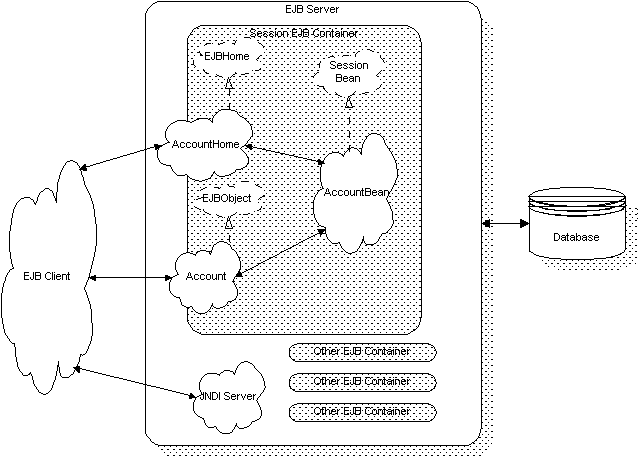
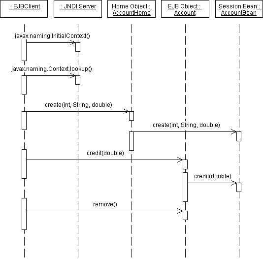
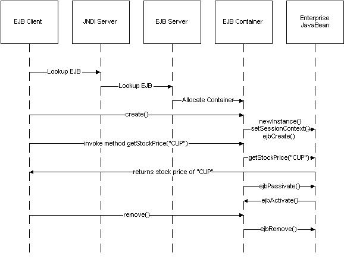

EJB
Containers
Gopalan Suresh Raj
A container is a set of classes generated by the deployment tool that manages among other things, an enterprise Bean's persistence, transactional properties, and security.
Obtaining Services from the Container
The EJB container provides EJBs with a distributed object infrastructure. EJB assumes an underlying ORB that understands the CORBA/IDL or RMI/IDL semantics. The IIOP transport layer should be able to propagate CORBA OTS transactions.
The container helps in component packing and deployment. An EJB is packaged using JARs, manifests and deployment descriptors. The container unJARs the EJBs and then executes it based on the instructions it gets from the manifest file and deployment descriptors
EJB containers provide declarative transaction management. EJB supports transactions built on the JTS service. The EJB container allows you to declaratively define your transactional objects. Your application need not make explicit calls to JTS to participate in a distributed transaction. The EJB container can explicitly manage the start, commit and rollback of a transaction. It starts a transaction if none exist. It manages the completion of the transaction using the underlying JTS services. You design the transactional attributes of the EJB at design-time (or during deployment) using declarative statements in the deployment descriptors. Optionally EJBs can explicitly control the boundaries of a transaction using explicit JTS semantics.
EJB containers manage the entire life-cycle of an EJB Bean. As a Bean provider, you are responsible for providing a remote interface for your EJB. You must define a factory interface that extends the javax.ejb.EJBHome Factory object (a class factory). The interface should provide one or more create() methods, one for each way you create your EJBObject. The container provider will automatically generate the factory implementation. However, your EJB Bean must implement an ejbCreate() method for each create() method you defined in your factory interface. As a last step you will have to register your factories with the container so that clients can create new beans. The container also provides a Finder interface to help clients locate existing entity beans.
As part of managing the life cycle of an enterprise Bean, the container calls your Bean when it is loaded into memory (or activated) and also calls it when it is deactivated from memory (passivated). Your component can then use these calls to explicitly manage its state and grab or release system resources.
EJB containers can manage both transient EJB beans and persistent EJB beans. Persistent or entity beans encapsulate in their object reference a unique ID that points to their state. An Entity Bean manages its own persistence by implementing the persistence operations directly. The container just hands down a unique key and tells it to load its state. The entity EJB can also direct the EJB Container to manage its state. The container can do this by simply serializing the EJB Bean’s state and store it in some persistent store or it can be as sophisticated as to map the EJB Bean’s persistent fields to columns in an RDBMS. Alternately, the EJB container may choose to implement persistence using an embedded ODBMS. The more advanced EJB containers can load the state of an EJB Bean from a persistent store and later save it on transactional boundaries.
EJB containers can provide metadata about the EJB beans that they contain. For eg., the EJB container can return the class name of the EJB Bean that this factory (EJBHome) interface is associated with.
EJB containers automate the management of some of the security aspects of the EJB Bean. The EJB developer gets to define the security roles for his EJB Bean in a SecurityDescriptor object. The developer then serializes this object and puts it in his Bean’s JAR. The EJB container uses this object to perform all security checks on behalf of the EJB Bean.
Relationship between EJB container and the server
The interface between the container and the server isn't specified yet, so it's not really possible at this point in time to have a container without a server. EJBs are intended to exist within an EJB container; they don't run as standalone classes. The idea of the architecture is that the container provides the logical interface between the Bean and the outside world, and the server provides the implementation of the functionality that the container requires (persistence, transactions, pooling, multiple instances, etc). The idea of the EJB architecture is that the server and container are responsible for providing the hard stuff (transactions, persistence, etc), so you only have to write the business logic. With EJB, you don't need to roll your own persistence mechanisms, or deal with multi-threading issues at all. These sorts of things are the truly hard parts of distributed systems. EJB was created so that programmers don’t have to deal with these things.
Building Customized EJB containers
The EJB Spec allows customization of the EJB Container. EJBeans which use customized containers naturally cannot be deployed in "vanilla" EJB containers, whereas the reverse is true (ie. "vanilla" EJBs can be deployed in customized EJB containers) The spec does not define the contract between the container and the server, therefore the interfaces are proprietary to each server. To build a custom container, you will need to work with the EJB server vendor.
However, there may be multiple reasons for extending the EJB model for a given enterprise and create customized containers. The three reasons that come to mind are:
If one wishes to achieve the componentization benefits of the EJB model, extension of the EJB contracts should be the recommended approach over writing custom containers from scratch. Theoretically, there is nothing wrong with organizations implementing component models that have entirely different interfaces/contracts other than the fact that the benefits that may stem from such componentization are limited to that organization.
Contract between the client and the EJB container
The EJB provider has to adhere
to two contracts: the client contract and the component
contract. The client contract is
between the EJB client and the EJB container. It is actually the
view that the client sees of the Enterprise Bean. It establishes
a unique identity, defines the home interface and indicates how
the class methods work. The Java naming and directory interface
defines how to search and uniquely identify the EJB and container
objects. Within the container, a unique key identifies each EJB.
The home interface is a basic description of how to create EJBs
in various forms according to the different create() methods
and how to destroy EJBs using the remove() method.
There are two sides to the life cycle of an EJB client-server session:
Figure below illustrates the classes involved in a typical EJB scenario.
 Figure: Classes available in a typical EJB scenario. |
The sequence diagram is shown
below.The point of view of
the client is illustrated in Figure below. Starting at the top
left of the image, the client first creates a new context to look
up the EJBObject with the help of a JNDI server. Given this
context, the client then creates an EJB using the home interface.
The client can then call the available methods of the EJBObject.
And when all the activities are complete, the client calls the remove()
function -- also through the home interface -- which terminates
the session.
 |
The equivalent code looks like this:
| import javax.naming.*; public class EJBClient { public static void main (String[] argv) { // get the JNDI naming context Context initialCtx = new InitialContext (); // use the context to lookup the EJB Home interface AccountHome home=(AccountHome)initialCtx.lookup("Account"); // use the Home Interface to create a Session Bean object Account account = home.create (1234, "Athul", 1000225.28d); // invoke business methods account.credit (1000001.55d); // remove the object account.remove (); } } |
Contract between a container and an EJB
The component contract is between an EJB container and the EJB and defines a callback mechanism to the EJB instance for object state -management purposes. This allows the container to inform the EJB of events in the Enterprise JavaBean's life cycle. The Enterprise JavaBean object and container’s point of view is shown in Figure below in simplified form. Both the EJB server and container perform actions, which are invisible to the client. The container allocation is a function of the EJB server and not the responsibility of either the client or EJB programmer.
 |
The client begins a new session
by sending the create() command. The container then
creates a new EJB using the newInstance() call and
proceeds to define the context in which the EJB will run with setSessionContext().
Elements of the context include: information about the container,
the environment, and the calling client's identity. Finally it
sends the ejbCreate() call, which contains the input
parameters as sent by the client. This creates a new EJB whose
methods can be accessed directly without any interference from
the container.
In some cases, the container may
choose to push EJB instances into a secondary cache when they are
idle, using the ejbPassivate() call. When the EJB
session object is needed again, it is recalled with ejbActivate().
When the client has completed its session, it sends the destroy()
call, which is intercepted by the container. The container, in
turn, sends a ejbDestroy() call to the EJB instance, allowing it to
clean up any pieces as needed.
The container can do a lot more than just pass operations safely to an EJB instance. Where many session objects exist in parallel, for example, the container can manage concurrency for maximum efficiency service. The container can cache an EJB instance in secondary memory if it is idle for too long. This reduces the overall memory usage while preserving the EJB session and its state. The container can also use the number of incoming connections to predict how many additional sessions may be needed in the future and allocate them ahead of time, thus saving on connection setup time.
The ability to cache an Enterprise JavaBean session object is not the same as with a persistent object. This cache is lost when the EJB server is shut down or crashes or if the container is destroyed. It's a temporary cache system that exists only to enhance performance when the program has to handle a large number of session objects.
The container manages this
working set of session objects automatically without the client
or server's direct intervention. There are specific callback
methods in each EJB which describes how to passivate
(store in cache) or activate (retrieve from cache) these
objects. When the ejbPassivate() call is made, the
EJB is serialized using the Java serialization API or other
similar methods and stored in secondary memory. The ejbActivate()
method causes just the opposite.
click here to go to
My EJB HomePage...
| About the Author... |
| Gopalan Suresh Raj is a Software Architect, Developer and an active Author. He is contributing author to a couple of books "Enterprise Java Computing-Applications and Architecture" and "The Awesome Power of JavaBeans". His expertise spans enterprise component architectures and distributed object computing. Visit him at his Web Cornucopia© site (http://www.execpc.com/~gopalan) or mail him at gopalan@execpc.com. |
|
This site was developed and is maintained by Gopalan Suresh Raj This page has been visited |
|
Last Updated : Dec 19, '98 |
||
Copyright (c) 1997-98, Gopalan Suresh Raj - All rights reserved. Terms of use. |
All products and companies mentioned at this site are trademarks of their respective owners. |